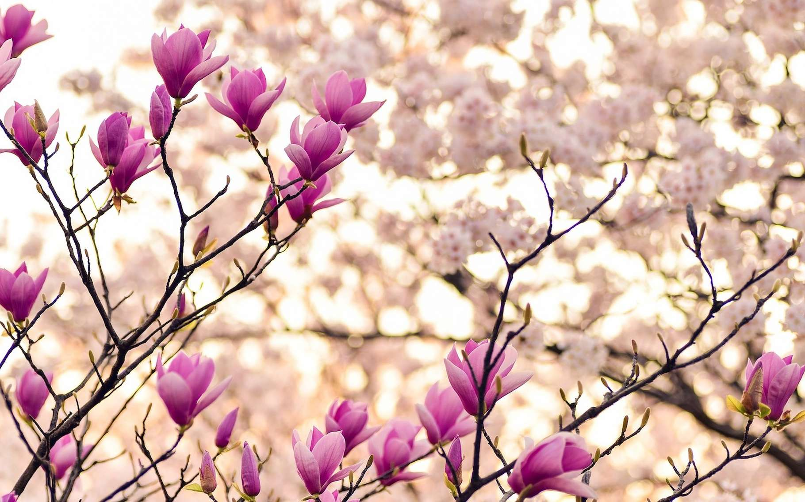
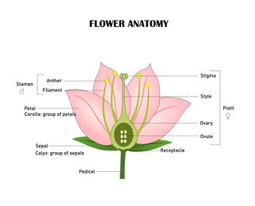
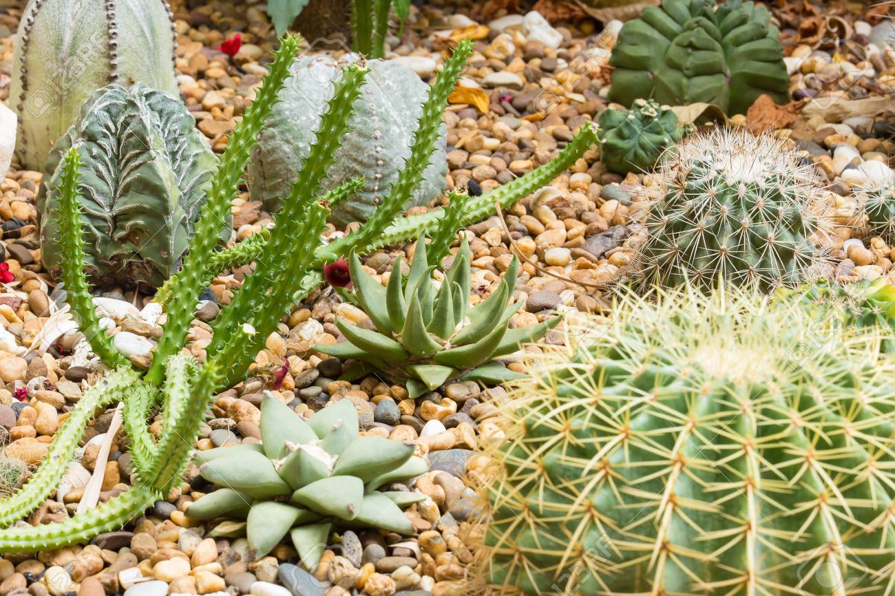
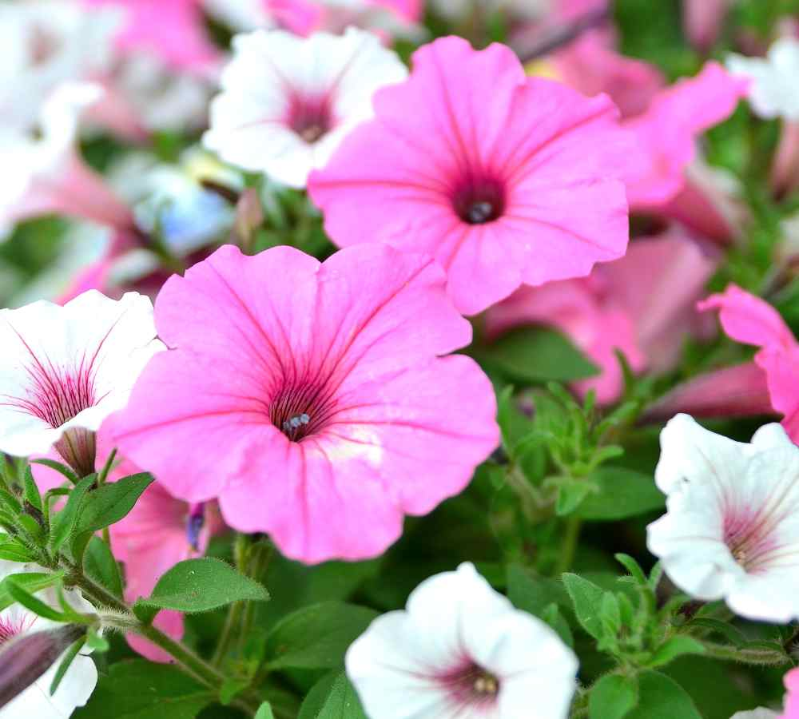

Les fleurs

Les fleurs appartiennent à la catégorie des plantes angiospermes. Ces plantes fleurissent lorsqu’elles atteignent leur stade adulte. Les fleurs sont utilisées comme moyen de pollinisation et de reproduction. Comme les insectes et autres animaux boivent le nectar d’une fleur et vont à une autre, ils sont capables de fertiliser la plante et de se reproduire pour étendre son aire de répartition.
Au sein des angiospermes, il existe deux types de fleurs très facilement reconnaissables à l’œil nu. Tout d’abord, nous trouvons les monocotylédones. Ces plantes n’ont qu’un seul cotylédon et leurs fleurs ont généralement des pétales par multiples de trois. Deuxièmement, nous avons les dicotylédones. Ces plantes, comme leur nom l’indique, ont deux cotylédons et les fleurs ont des pétales en nombre multiple de quatre ou cinq.
Il existe également d’autres façons de classer les fleurs, en particulier pour les plantes qui sont annuelles. On y trouve des plantes vivaces, bisannuelles et éphémères. Chacun d’eux correspond à la durée pendant laquelle ils restent en fleur. Certains jardiniers classent les plantes en fonction de leur type de reproduction. Qu’il soit sexuel ou asexué.
Il convient de mentionner qu’il est important, lorsqu’on essaie de classer une plante monocotylédone ou dicotylédone, de tenir compte du fait que de nombreux pétales peuvent être attachés les unes aux autres ou les feuilles à certaines parties de la plante et il est difficile de les différencier. Cependant, cette classification des fleurs est très simple. Il faut quelque chose de plus complexe pour bien les différencier.
Caractéristiques des angiospermes

Dans les angiospermes il y a environ 250 000 à 400 000 sortes de fleurs différentes. Ils sont divisés en monocotylédones et dicotylédones. Un cotylédon est la capsule de la graine où elle se développe. Il contient la nourriture nécessaire à la croissance et au développement des embryons. Lorsque la graine pousse, elle envoie un ou deux cotylédons (selon le type de fleur) aux feuilles.
Les monocots forment un quart de tous les angiospermes du monde. Par exemple, les roses sont des fleurs dicotylédones.
Pour différencier l’un de l’autre, on peut voir que les fleurs monocotylédones ont les nervures des feuilles sont parallèles et commencent à la base de la feuille se retrouvent à la pointe sans aucune ramification. Par exemple, les lys.
D’autre part, les veines des dicotylédones partent du bas et se ramifient en un réseau ordonné sur toute la surface de la lame.
Le moment le plus facile pour reconnaître un type de plante est lorsqu’elle est en pleine croissance. Lorsqu’ils parviennent à atteindre la surface de la terre, on peut voir ceux qui n’ont qu’une feuille et ceux qui en ont deux.
Monocotylédones et dicotylédones

Les monocotylédones peuvent avoir jusqu’à des millions de racines fibreuses individuelles sans avoir de racine principale centrale. Les feuilles sont similaires en ce sens que leurs nervures ne se ramifient pas à partir d’une veine centrale. Les veines sont parallèles entre elles.
Certaines fleurs monocotylédones le sont : lys, orchidée, tulipe, safran, jonquille et cloche. Toutes ces fleurs présentent les caractéristiques mentionnées ci-dessus.
Les plantes dicotylédones ont une racine principale par laquelle de plus en plus de petites racines se ramifient. Ses feuilles, de la même manière, ont une veine centrale à partir de laquelle le reste des veines se ramifient. Les racines de ces plantes peuvent couvrir une grande étendue de terrain pour couvrir de manière correcte les besoins alimentaires.
Parmi les fleurs dicotylédones, on trouve rose, marguerite, cappuccino, bégonia et portulaca.
Types de fleurs
Plantes du désert en fleurs

Même si l’on pense autrement, le désert est un écosystème où vivent de nombreux êtres vivants. Les plantes qui y vivent doivent s’adapter à des environnements dont Les conditions sont extrêmes. Ils doivent être capables de collecter et de stocker l’eau des faibles précipitations et disposer de systèmes permettant d’éviter les pertes d’eau. Les plantes qui se trouvent dans le désert ont un aspect très différent de celles qui ont le reste. C’est parce qu’ils doivent s’adapter aux situations.
Mais cela ne signifie pas que ces plantes, même si elles ont une morphologie différente, ne fleurissent pas. Parmi leurs caractéristiques, on trouve:
Les arbustes sont capables de réduire la perte d’eau grâce à ses feuilles cireuses et un arôme pour empêcher les animaux de s’en nourrir.
Les cactus ont de petites épines à la surface de leurs feuilles pour empêcher les animaux de les manger. Ils sont capables de stocker jusqu’à 800 litres d’eau.
Les plantes du désert effectuent leur photosynthèse sur la tige, qui est verte et contient de la chlorophylle
Les racines sont assez longues pour absorber le plus d’eau possible.
Les plantes qui ont des fleurs dans le désert sont le cactus, le cactus saguaro, l’agave du désert et la rose du désert.
Plantes à fleurs plus résistantes

Ce sont les plantes saisonnières capables de s’adapter à la température et au climat de certaines régions. Les plantes qui ont une floraison plus robuste sont capables de tolérer des températures basses sans mourir, plus de chaleur ou de vent et même survivre aux inondations.
Parmi ces plantes plus résistantes, on trouve : le maïs, l’aubergine, le potiron, la tomate, les pétunias, le brouillard d’amour et d’autres plantes suspendues avec des fleurs.
Parmi les plantes suspendues à fleurs, on trouve ces petits arbustes à feuilles persistantes qui peuvent être cultivés en pots suspendus. Leurs fleurs peuvent être plantées dans les patios et même sur les clôtures. Ils sont généralement plantés en avril et début juin. Il s’agit de la rose mousse, de la lantane, du fuchsia, de la verveine, etc.